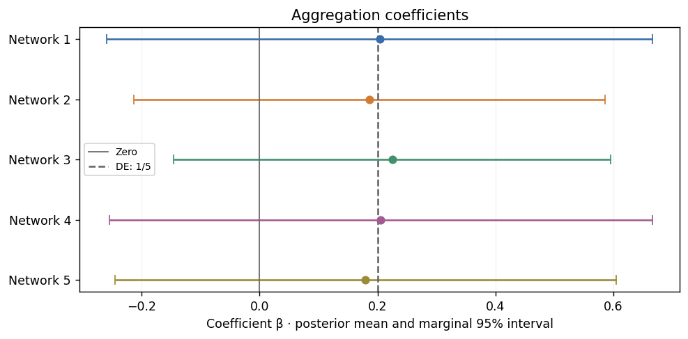
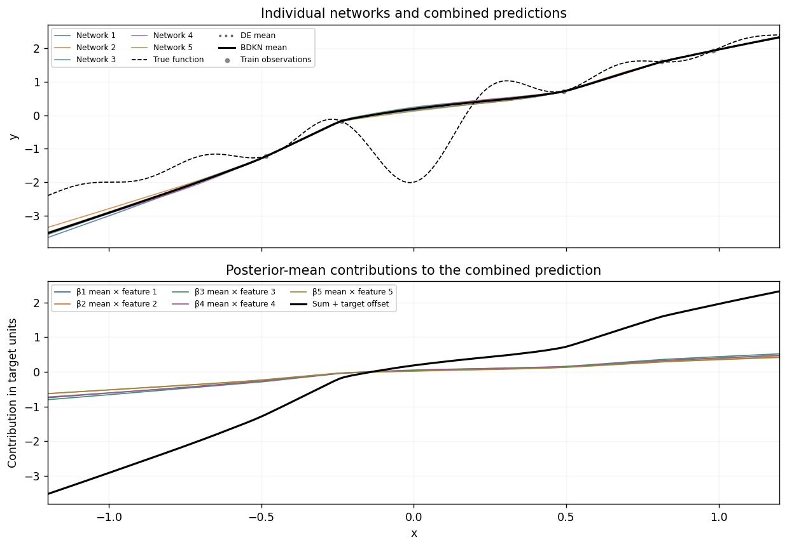
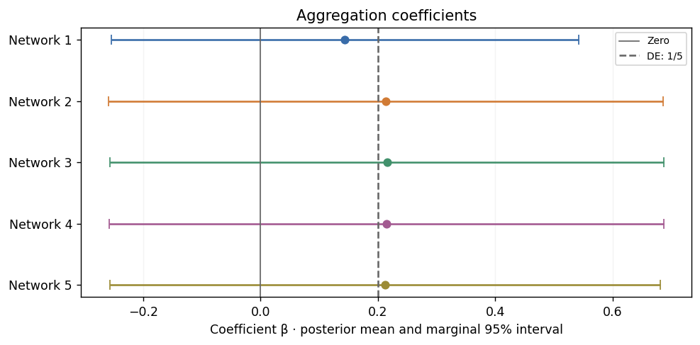
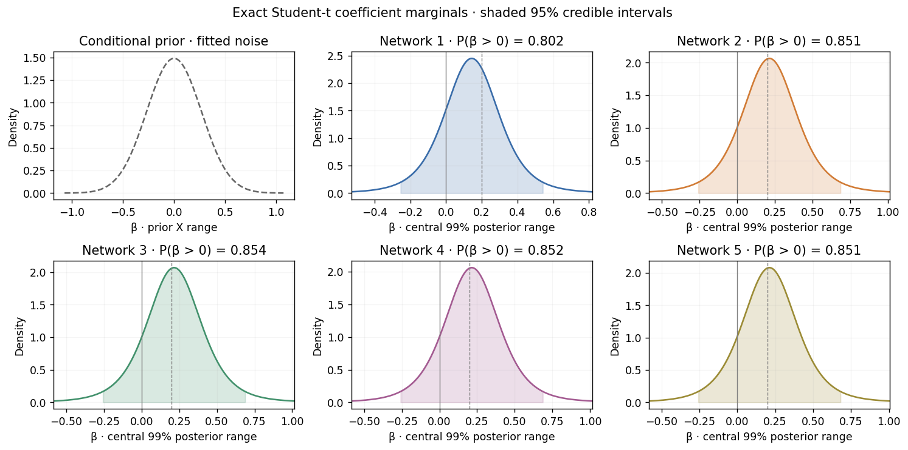
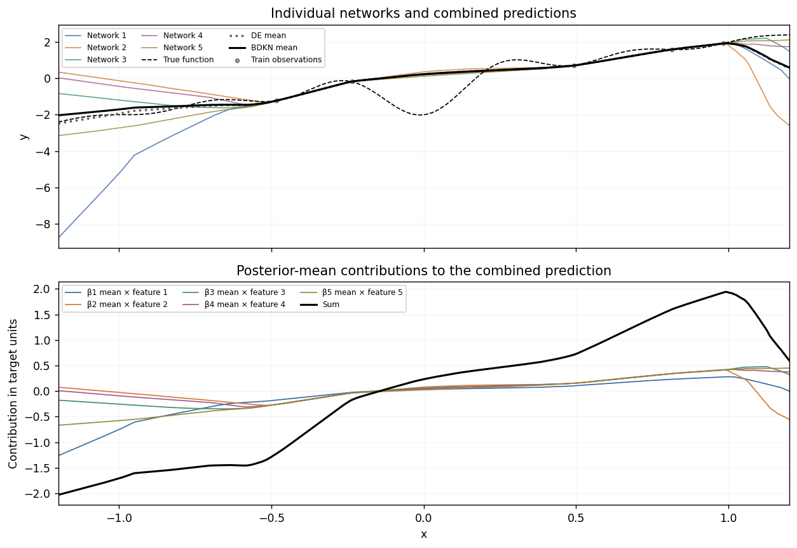
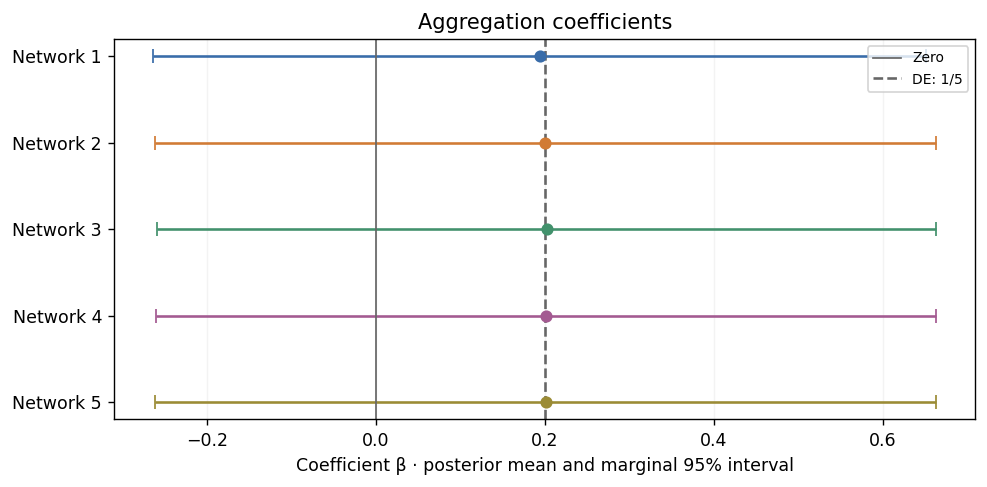
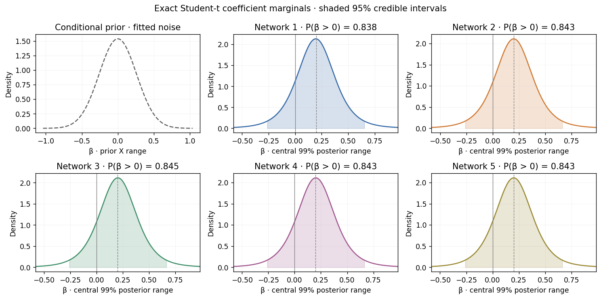
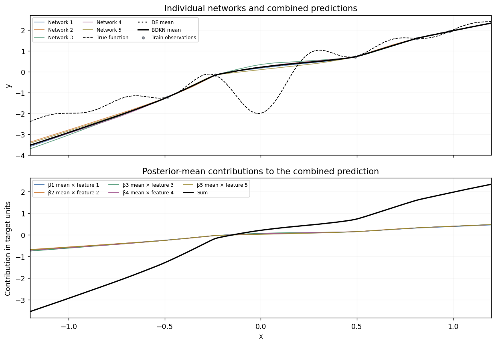

Regression comparison
Download resultsAggregation weights
Coefficients can be negative and need not sum to one. Intervals describe coefficient uncertainty; the dashed reference is DE’s fixed 1/H weight.
BDKN


Each density panel uses its own X range for readability; coefficient intervals above share a common axis. Prior reference conditions on fitted noise. Contribution shares use held-out inputs; test targets are used only for scoring.
| Network | β mean | 95% low | 95% high | P(β > 0) | Contribution share | Test RMSE | Test NLL |
|---|---|---|---|---|---|---|---|
| 1 | 0.18378 | -0.28768 | 0.65525 | 0.81884 | 0.18558 | 0.77438 | 14831.39553 |
| 2 | 0.21712 | -0.25401 | 0.68825 | 0.85530 | 0.21236 | 0.72161 | 5870.93193 |
| 3 | 0.18694 | -0.26881 | 0.64268 | 0.83002 | 0.18791 | 0.77327 | 3837.63935 |
| 4 | 0.21394 | -0.25925 | 0.68713 | 0.85120 | 0.21803 | 0.78641 | 25124.08623 |
| 5 | 0.19829 | -0.25603 | 0.65261 | 0.84357 | 0.19610 | 0.73920 | 2290.88784 |
Functional repulsion · BDKN


Each density panel uses its own X range for readability; coefficient intervals above share a common axis. Prior reference conditions on fitted noise. Contribution shares use held-out inputs; test targets are used only for scoring.
| Network | β mean | 95% low | 95% high | P(β > 0) | Contribution share | Test RMSE | Test NLL |
|---|---|---|---|---|---|---|---|
| 1 | 0.20367 | -0.25880 | 0.66615 | 0.84552 | 0.20517 | 0.77688 | 42412.45371 |
| 2 | 0.18632 | -0.21342 | 0.58606 | 0.85773 | 0.18446 | 0.74317 | 16481.64193 |
| 3 | 0.22482 | -0.14557 | 0.59522 | 0.91028 | 0.22537 | 0.77979 | 7897.24117 |
| 4 | 0.20570 | -0.25512 | 0.66651 | 0.84844 | 0.20780 | 0.78048 | 20875.67536 |
| 5 | 0.17946 | -0.24531 | 0.60424 | 0.83649 | 0.17720 | 0.74469 | 4945.62302 |
Weight repulsion · BDKN



Each density panel uses its own X range for readability; coefficient intervals above share a common axis. Prior reference conditions on fitted noise. Contribution shares use held-out inputs; test targets are used only for scoring.
| Network | β mean | 95% low | 95% high | P(β > 0) | Contribution share | Test RMSE | Test NLL |
|---|---|---|---|---|---|---|---|
| 1 | 0.14392 | -0.25405 | 0.54189 | 0.80238 | 0.21699 | 1.68154 | 572026.57737 |
| 2 | 0.21355 | -0.25856 | 0.68565 | 0.85130 | 0.15656 | 1.35169 | 42527.61768 |
| 3 | 0.21577 | -0.25608 | 0.68762 | 0.85364 | 0.20757 | 0.76279 | 5272.80873 |
| 4 | 0.21466 | -0.25791 | 0.68723 | 0.85221 | 0.17074 | 0.92045 | 19798.51340 |
| 5 | 0.21210 | -0.25672 | 0.68091 | 0.85134 | 0.24815 | 0.70493 | 13907.64385 |
First-order repulsion · BDKN



Each density panel uses its own X range for readability; coefficient intervals above share a common axis. Prior reference conditions on fitted noise. Contribution shares use held-out inputs; test targets are used only for scoring.
| Network | β mean | 95% low | 95% high | P(β > 0) | Contribution share | Test RMSE | Test NLL |
|---|---|---|---|---|---|---|---|
| 1 | 0.19424 | -0.26304 | 0.65152 | 0.83767 | 0.19428 | 0.77182 | 15065.88810 |
| 2 | 0.20067 | -0.26131 | 0.66266 | 0.84253 | 0.19842 | 0.74629 | 15079.21075 |
| 3 | 0.20248 | -0.25858 | 0.66354 | 0.84492 | 0.20782 | 0.82868 | 16237.88919 |
| 4 | 0.20134 | -0.26053 | 0.66320 | 0.84331 | 0.20341 | 0.78732 | 21543.43725 |
| 5 | 0.20125 | -0.26064 | 0.66314 | 0.84320 | 0.19607 | 0.73103 | 16016.56548 |